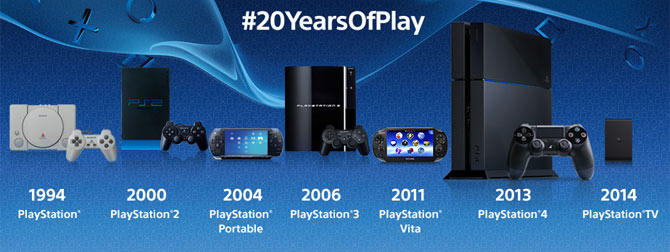
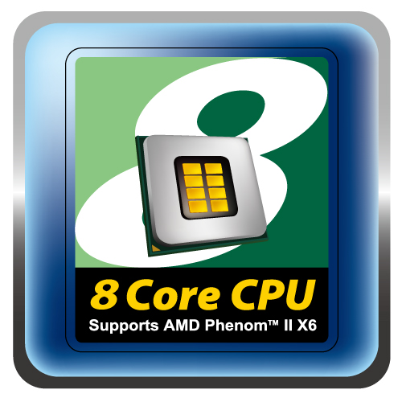
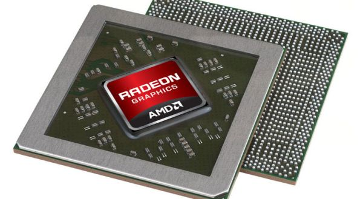
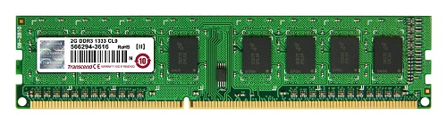
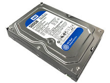
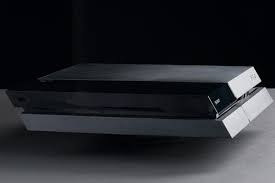

History
Back in 1988, the origins of the playstation was made. Originally it was a joint project between Nintendo and Sony. Nintendo denied a deal with Sony so they branched separately in 1991. In June of 1991, Sony incorprated a piece of tech code named "Playstation" into a CD-ROM. Years later, the first console was born. The playstation was created on December 3, 1994 and was one of many consoles to arrive in the series for years to come. In 2000, the PS2 was released. This was the most successful console ever to be sold in the world with 155 million units as of 2012. Six years later, the PS3 was released. This console was the first console to introduce motion sensing technology. and had Blu-ray compatibility. The latest the console in the series is the PS4 which dropped in late 2013. Everything was revisioned and built with better tech than ever. There were other versions in between each major console. Slim versions and smaller versions, capacity upgrades and so on.
- MotorStorm series
- Horizon Zero Dawn
- Ratchet and Clank series
- SOCOM series
- Yakuza Series
- LittleBigPlanet series
- Uncharted series
- Infamous series
Exclusive Games
(Just to name a few)

- The father of playstation made his career by creating a soundchip for Nintendo.
- The best selling playstation game was GTA San Andreas with over 17 million units.
- Playstation sold more consoles than Xbox, Nintendo 64, GameCube combined.
- A few military groups stockpiled playstation consoles in hopes of turning it into a weapon.
Fun Facts
How to build a playstation
Just like any computer, all you need are the proper components and basic knowledge about PC building. RAM, secondary chips,GPU, CPU, flash memory, hard drives, inputs and outputs and so on. Here's a list of the required components for a PS4 more specifically. This section is for those who like a more a detailed behind the scenes of the latest console in the series.
An 8 core CPU
An AMD APU
GDDR5 RAM
500GB HDD
A shell